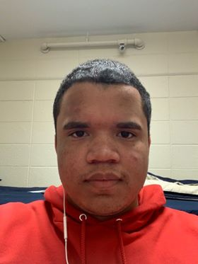
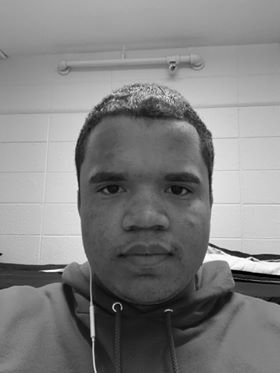
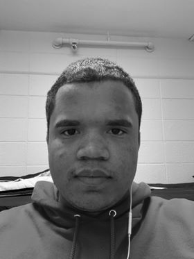
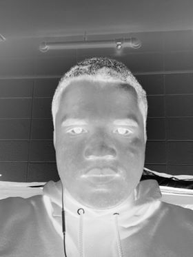

Problem Definition
The goal of this part of the assignment is to further familiarize you with programming with images. Your program should take an image of your face as an input, manipulate it in three ways and then output the processed face: 1. Create a grayscale image of your face by converting your color image using one of the conversions we discussed in class last week. 2. Flip your face image horizontally, i.e. left to right, right to left. 3. Come up with a third way of manipulating your face that produces an interesting output. For example, you may create a blurred image of your grayscale face by assigning to each pixel the average grayscale pixel value of itself and its 8 neighbors. Hint: You may have to run your program a few times to make the blurring noticeable.
Method and Implementation
1. In order to create the grayscale image, I used the Gray equation we discussed in lecture "0.3*R + 0.6*G + 0.1*B". It should be noted that the order of pixels in OpenCV is BGR instead of RGB so the equation was implemented in my code like this: "0.1*B + 0.6*G + 0.3*R" to interate thorugh each pixel in a nested for-loop to weight the intensities. 2. Using another nested for-loop for the horzontal flip image, I traversed through all the pixel rows but only through half of the pixel columns. That way I can exchange the intensities of the coressponding pixel on the other half of the image. 3. Insteading of the blurry image implementation, I came up with my own interesting way of manuplating the image with I instead created a "negative" version of the grayscale image. Essentially, all I did was find each pixel's complementary instensity ( 255 - original instensity ) thus finding the "negative" version of the orginal pixel.
Experiments
Experiment Environment: Windows 7 Ultimate x64 Machine Applications: Visual Studio 2017 Community Version, OpenCV, C++ Programming Language Average Exection Time of Code: 5 seconds Process Memory Rate: 6 MB/second CPU (% of all processors): approx. 20%
Results
My experimental results are the following:
Results | ||
| Trial | Source Image | Result Image |
| Color to Grayscale |  |  |
| Horizontal Flip (i.e. left to right, right to left) |  | |
| Grayscale to Negative Grayscale |  | |
Discussion
Discuss your method and results:
- My code for this assignment was fairly simple and straight to the point as I am not used to using C++ and more efficient in a language like Python.
- I got the results that were expected of me in this assignment though I wouldn't say it's the fatest since I used nested for-loops for each section. So when it comes to code time optimzation, I could always work on that in the future.
- Learing more about C++ and OpenCV could help me solve assignments like these far more efficiently and discover other intesting ways of manpluating images.
Conclusions
I've learned that I can manpluate the color and position of the image by changing the RGB value and the position of the pixel. I've also learned the basic operations of image processing in OpenCV through this assignment.
Credits and Bibliography
Lecture Material: "How to Program with Images" by Diane Theriault & Margrit Betke "CAS CS 585 Image and Video Computing: Lecture 2" by Margrit Betke
Homework Template: http://www.cs.bu.edu/faculty/betke/cs585/restricted/hw-instructions/cs585-homework-template.html